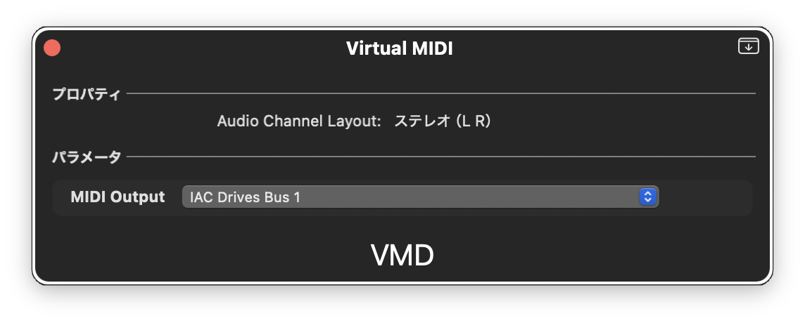

VMD
Virtual MIDI Device

Download
ZIP Archive • 337 KB
macOS 10.15+
Installation
1. Download and unzip the archive
2. Press
⌘ + Shift + G
in Finder
3. Enter:
/Library/Audio/Plug-Ins/Components/
4. Copy
VMD.component
to this folder